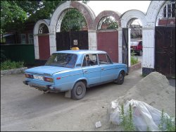

To be content
Contentment is a virtue that at times I’ve lacked. Perhaps this is also true for you, if you are honest with yourself. There was period when I was discontent about not being able to make a much-desired trip back to visit the country of my birth and my relatives, and glimpse some more of the world. When we were able to go, I gained so much more than expected! And when we returned home I was struck with an almost overwhelming feeling of thankfulness and, well, contentment that we live in such a free, spacious, friendly, scenic, modern country! (I could keep the superlatives flowing.) What a blessing to have been born in a country with a rich European-Reformed heritage and culture; but what a godsend also to live in this Aotearoa, this “Godzone”, with all that it entails.
It was a privilege to have visited Holland earlier this year, fulfilling years of longing to see both the fatherland and our ageing relatives, and experience that culture once again. It was a huge trip and so we decided to also realise some other longstanding dreams by visiting more of Europe, including Russia.
As anticipated, we found Holland to be beautiful, clean, and charming; the relatives warm and welcoming, and yet it was also evident that many of them had drifted away from their heritage, and that their lives were much more regulated than ours here in New Zealand. The space, stunning scenery and uncomplicated lifestyle we generally take for granted are simply not to be found there. Having said this, it is not my intention to run Holland down in any way, as I still consider it my homeland and have proudly (perhaps stubbornly) retained my Dutch citizenship. I merely wish to focus on thankfulness and counting our blessings!
Nowadays there is increased talk about the downward spiral in our country, and perhaps many felt pangs of disappointment (or worse) at the prospect of another three years under a left-wing government, but let’s also focus on and cherish what we do have in this land of ours. Compared with many other countries, we have a lot to be thankful for.
New Zealand has so far been spared from the escalating terrorist attacks that are plaguing much of the world and subjecting many other lands to fear. We passed through London just six days before the July subway and bus attacks, frequenting all of the stations that were subsequently targeted. We heard the news back in the relative safety of the Netherlands (on a lovely tourist island to be precise), and immediately felt that we were being looked after. Before departing from New Zealand, we had spoken words of reassurance to our children (as they did not accompany us on this trip) and these words now became real for us. Yet in most of Europe, the heightened security and anxiety was immediately evident.
Natural disasters feature more and more in world news reports, but here in our country we are almost free of such events – and certainly on the scale of say the Asian tsunami, the American hurricanes or the Pakistani earthquake. Our land is long overdue for a large earthquake, tsunami or eruption (they have historically occurred here), yet none have occurred in my lifetime. The bird flu threat that now appears to have Europe on high alert is something that is still relatively remote from our shores. Our geographic isolation is a reason to be thankful.
We enjoyed three hectic days in London, making the most of our pre-paid day and transport passes (this is where our Dutch natures definitely came in useful). The city holds history and culture aplenty, but we found it to be quite impersonal – so huge! You certainly do not experience the friendliness and laid-back way of life found in Kiwi-land. The majority of people on the subway appeared rushed, unhappy and unfriendly. You get the impression that many people only exist rather than actually live in such a hectic, overcrowded city.
Ever since I began to study French at school I have wanted to visit “the city of romance.” A five-day bus tour showed us nearly all of the “must-see” sights of Paris, and more. Astounding! The Parisians were friendlier than we had been led to believe, with many attempting to speak English to us. But again in such a vast, bustling city there are no personal connections to be made. Paris was disappointingly dirty and grimy, certainly not “green and clean” like New Zealand.
Russia was the biggest eye-opener of all. We wanted to see this country’s diversity of culture – the architecture, art and history, and also experience the very different way of life we knew we would be exposed to. Communism may be officially gone, but its scars can be observed across the psyche of the people. There is a poor work ethic and customer service is elusive. The majority of the population looks sad, is poorly dressed and lives in poverty (compared with our Western standard of living). A small minority, known as the “New Russians”, the “Russian Mafia” and other such names, is now said to (unofficially) run the country. They can be seen driving at high speeds in expensive vehicles with tinted windows, while the remainder of the population has to be satisfied with decrepit Ladas for transport!
Our hosts told us that the Russians attempt to escape their circumstances as much as possible, and that is one reason why Russia has a rich fairytale tradition. Now fairytales may be sweet and romantic, but alcoholism, beggars and mistreatment of women are not! Much of the infrastructure of Russia’s cities is quite poor, and in the countryside it is practically non-existent. Russia functions by means of bribes and corruption, which are still rife within many government departments. Some everyday tasks that we perform effortlessly are nearly impossible to complete there: try sending a parcel from somewhere in Russia – if you manage to complete this errand within an afternoon you will be doing very well.
A distinct lack of cleanliness seems to go hand-in-hand with the poor work ethic. Now being of Dutch descent may make me finicky in this area in the eyes of some, but the old adage “cleanliness is next to Godliness” certainly came to mind. As this vast nation has tried to live officially without religion for some 80 years, the results of this “experiment” speak for themselves – laziness, filth, escapism and dishonesty are all evident! Don’t get me wrong, we did enjoy our Russian visit – our hosts were kind gracious people, our New Zealand Russian friends acted as fine tour guides, and we saw amazing sights and had the opportunity to just relax. We concluded that Russia is something you have to experience. And yet for us it was an enriching experience because this country, more than any other, made us appreciate how great our life in New Zealand really is!
“Count your blessings; name them one by one” is the song that went through my mind, and when we came home, I resolved never to complain again, fully aware that I will need to be reminded of this. I am so thankful the journey taught us some worthwhile lessons, and hope that sharing our experiences and impressions will also encourage you to bloom where you are planted. For I have learned to be content whatever the circumstances.